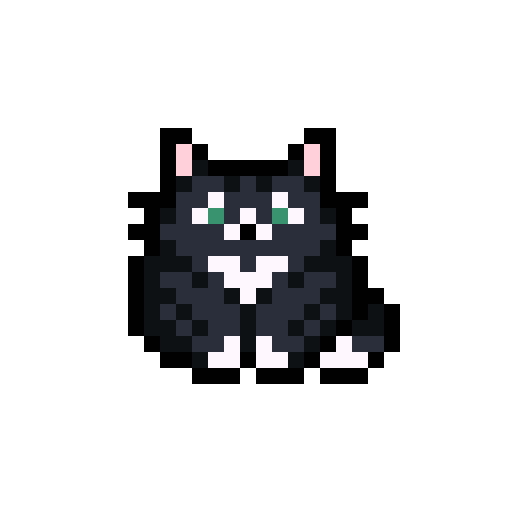
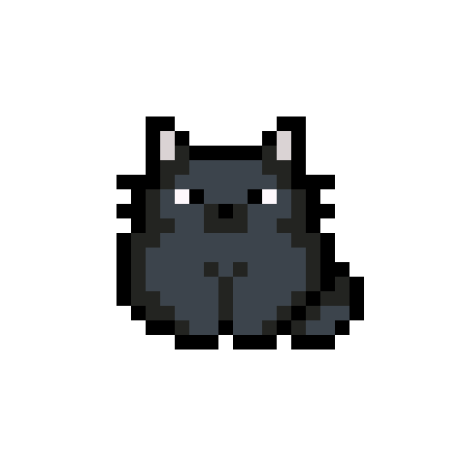

PAWSE
Choose your
COMPANION
Select a feline assistant to help you focus.
Balanced
Tux
A classic 25-minute session for steady, paced focus.

Sprint
Ginger
A quick 15-minute sprint for energetic, playful bursts.
Focused
Void
A deep 50-minute dive for quiet, uninterrupted flow.

Confirm Selection